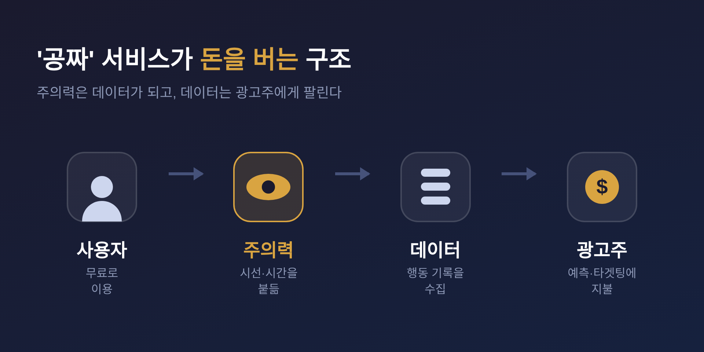
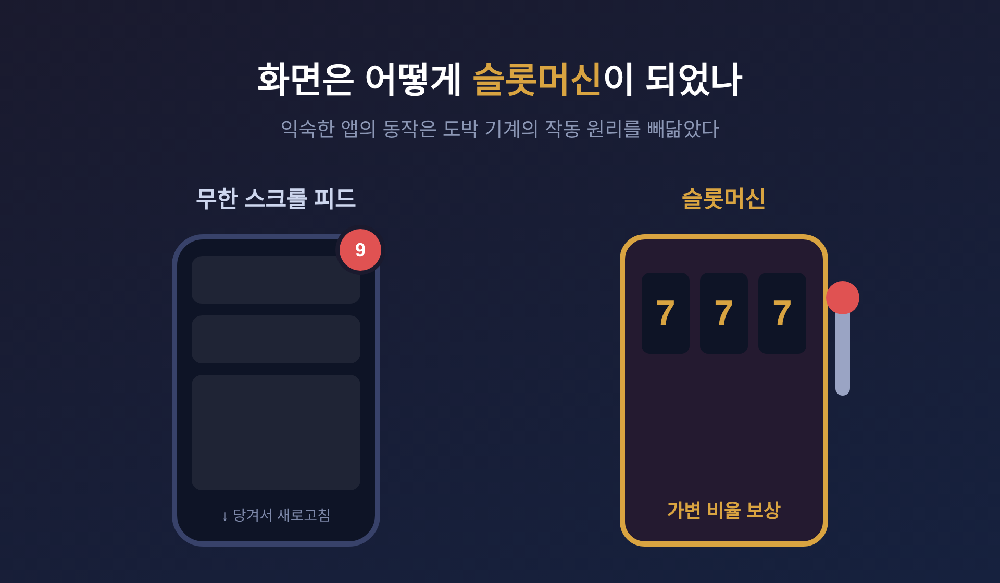
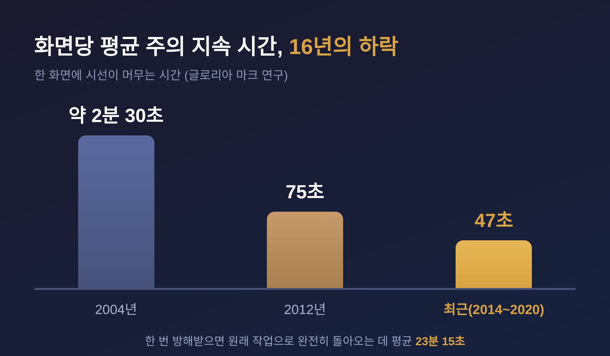

이번 글에서는 '주의력 경제(attention economy)'를 정리해 보겠습니다.
먼저 짧게 답부터 드립니다. 무료처럼 보이는 디지털 서비스는 사실 우리의 주의력을 모아 광고주에게 파는 구조로 돌아갑니다. 그 통찰은 스마트폰도 인터넷 광고도 없던 1971년에 이미 나왔습니다. 그리고 2026년, 그 구조는 우리의 감정과 애착까지 거래하는 단계로 넘어가고 있습니다.
이 글은 한 개념이 반세기에 걸쳐 어떻게 산업이 되었는지를 따라갑니다. 개념의 기원에서 출발해, 설계의 윤리, 권력의 구조, 측정된 피해, 그리고 회복의 철학까지 차례로 짚어 보겠습니다.
시작은 한 경제학자의 짧은 문장이었습니다.
1978년 노벨경제학상을 받은 허버트 A. 사이먼은 1971년 논문 "정보가 풍부한 세계를 위한 조직 설계"에서 이렇게 적었습니다. 정보가 풍부해지면, 그 정보가 소비하는 무언가는 도리어 희소해진다고 말입니다.
그가 지목한 '소비되는 것'은 우리의 주의력이었습니다.
사이먼의 문장은 지금도 자주 인용됩니다.
"정보의 풍요는 주의력의 빈곤을 낳으며, 그 주의력을 그것을 소비하려는 과잉의 정보원들 사이에서 효율적으로 배분할 필요를 만든다."
그는 한 가지를 더 짚었습니다. 정보 시스템을 만드는 사람들이 문제를 잘못 보고 있다는 것이었습니다. 그들은 '정보가 부족하다'고 여겨 점점 더 많은 정보를 쏟아내는 시스템을 만들었습니다. 정작 필요한 것은 중요하지 않은 정보를 걸러 주는 시스템이었는데도 말입니다.
사이먼은 주의력을 인간 사고의 '병목'이라 불렀습니다. 처리할 수 있는 양이 정해진, 한정된 자원이라는 뜻입니다.
스마트폰도 소셜미디어도 없던 시절입니다. 그런데 그가 그린 구조는 반세기 뒤 산업 전체의 비즈니스 모델로 현실이 되었습니다.
주의력은 한정된 자원입니다. 하루는 24시간뿐이고, 한 번에 한곳만 볼 수 있습니다.
그래서 '무료' 서비스는 무료가 아닙니다. 소셜미디어, 검색, 동영상은 사용자의 주의력을 모아 광고주에게 파는 방식으로 돈을 법니다. 오래된 격언이 이 구조를 한 줄로 요약합니다.
"당신이 비용을 내지 않는다면, 당신이 상품입니다."
문제는 여기서 생기는 성장 압력입니다. 주의력의 총량이 정해져 있으니, 플랫폼이 커지는 유일한 길은 '주의력을 더 잘 끌어모으는 것'뿐입니다.
이 압력이 콘텐츠의 성격을 바꿉니다. 분노를 유발하는 글, AI로 대량 생산된 저품질 콘텐츠, 자극적인 밈이 피드를 채우게 된다는 분석이 있습니다. 더 강하게 붙드는 것이 곧 돈이 되기 때문입니다.

우리는 흔히 스마트폰 중독을 '의지력의 문제'로 여깁니다. 끊지 못하는 내 탓이라는 것입니다.
그런데 안에서 일하던 사람의 증언은 다릅니다.
트리스탄 해리스는 구글에서 일하던 기술 윤리학자입니다. 그는 스탠퍼드대에서 인간-컴퓨터 상호작용을 공부했고, BJ 포그 교수의 '설득적 기술 연구소'에서 습관과 행동 변화를 연구했습니다.
2013년 2월, 그는 구글 재직 중 한 편의 프레젠테이션을 돌립니다. 제목은 "주의 분산을 최소화하고 사용자의 주의력을 존중하자는 호소"였습니다. 구글, 애플, 페이스북이 사람들을 하루 종일 화면에 붙들어 두지 않도록 "엄청난 책임감을 느껴야 한다"는 내용이었습니다.
2015년 그는 구글을 떠나 비영리단체 'Time Well Spent'를 세웠습니다. 이 단체는 뒤에 'Center for Humane Technology(인간적 기술 센터)'가 됩니다.
그의 주장은 분명합니다. 중독적인 제품은 우연히 만들어진 것이 아니라는 것입니다. 무대 마술, 사회공학, 행동경제학의 기법을 끌어다 쓴 '주의력을 수확하는 설계'가, 우리의 집중 능력을 떨어뜨리고 관계를 약화시킨다고 그는 말합니다.
넷플릭스 다큐멘터리 〈소셜 딜레마〉의 중심 인물이 바로 그입니다. 2019년에는 미국 상원 청문회에서 증언하기도 했습니다.
설계가 어떻게 우리를 붙드는지는 익숙한 동작 속에 숨어 있습니다.
무한 스크롤을 만든 사람은 아자 래스킨입니다. 2006년 무렵, 원래 목표는 클릭을 줄여 쓰기 편하게 하려는 것이었습니다. 구글 맵의 부드러운 스크롤에서 영감을 얻었다고 합니다.
그러나 래스킨은 훗날 자신의 발명을 공개적으로 후회했습니다. 무한 스크롤이 인류의 집단적 주의력에서 수년의 시간을 앗아갔다고 추정하면서 말입니다.
핵심 원리는 '가변 비율 강화'입니다. 별 가치 없는 콘텐츠 사이에 예측할 수 없는 보상을 끼워 넣어, 멈추기 힘든 충동을 만드는 방식입니다.
낯익은 장치들이 이 패턴을 강화합니다.
여기서 흔한 오해 하나를 바로잡아야 합니다. 도파민은 '쾌락'의 신호가 아닙니다. 도파민은 '기대'와 '예측 오차'의 신호입니다. "이건 기분 좋다"가 아니라 "이건 추구할 가치가 있을지도 모른다"는 속삭임에 가깝습니다. 충동을 만드는 것은 보상 자체가 아니라 그 기대입니다.
그래서 과도한 사용은 의지의 실패가 아닙니다. 중독되도록 의도적으로 설계된 시스템에 노출된 결과로 보는 편이 정확합니다.
스탠퍼드의 중독의학 전문가 안나 렘키는 저서 《도파민 네이션》(2021)에서 이를 더 날카롭게 표현했습니다.
"스마트폰은 현대판 피하주사 바늘로, 연결된 세대에게 디지털 도파민을 24시간 공급한다."
렘키의 설명은 이렇습니다. 뇌에서 쾌락과 고통을 처리하는 영역은 겹쳐 있고, 서로 균형을 맞춥니다. 도파민 자극으로 저울이 쾌락 쪽으로 기울면, 뇌는 반사적으로 균형을 되찾으려 합니다. 그 결과 저울은 결국 고통 쪽으로 똑같이 기웁니다. 그가 권하는 해독제는 의도적 절제와 자기 결박, 그리고 정직한 공동체입니다.

주의력 경제는 시간을 빼앗는 데서 그치지 않습니다. 사회의 결까지 건드립니다.
참여 기반 추천 알고리즘은 '클릭'을 최적화합니다. 사용자의 만족이 아니라 말입니다. 한 연구는 이런 알고리즘이 감정적으로 격앙되고 외집단에 적대적인 콘텐츠를 체계적으로 키운다고 분석했습니다. 흥미로운 단서가 있습니다. 사용자에게 '보고 싶은 것'과 '실제로 클릭한 것'을 따로 물으면 답이 갈렸다는 점입니다. 사람들은 분노에 반응하지만, 분노를 꾸준히 소비하고 싶어 하지는 않았습니다.
여기서 '토끼굴' 문제가 나옵니다. 시청 시간을 최적화한 모델이 점점 더 극단적인 콘텐츠를 추천하도록 학습했다는 분석입니다.
다만 이 대목은 신중하게 다뤄야 합니다. 알고리즘이 사용자를 극단으로 밀어붙인다는 견해가 한쪽에 있고, 알고리즘 자체보다 사용자의 선택과 수요가 더 큰 요인일 수 있다는 감사 연구도 다른 한쪽에 있습니다. 인과의 강도를 두고 학계의 결론은 아직 갈립니다.
그 아래에는 더 깊은 층위가 있습니다. 하버드 경영대학원 명예교수 쇼샤나 주보프가 《감시자본주의 시대》(2019)에서 분석한 구조입니다.
주보프는 감시자본주의를 이렇게 정의합니다.
"사적인 인간 경험을 행동 데이터로 번역하기 위한 무료 원료로 일방적으로 주장하는 것."
그가 말하는 '행동잉여'는 우리가 알지도, 동의하지도 않은 채 우리에 대해 수집되는 데이터입니다. 기업은 이 데이터로 '행동 선물 시장'을 만들어 인간 행동을 예측하고 그 예측을 팝니다. 주보프의 표현을 빌리면, 행동을 예측하는 가장 확실한 방법은 그 원천에 개입해 행동을 형성하는 것입니다.
여기서 주의력 경제와의 연결이 분명해집니다. 주의력을 끄는 일은 데이터를 얻기 위한 수단이기도 합니다. 주의력 경제가 1차 구조라면, 감시자본주의는 그 데이터로 미래 행동을 예측하고 형성하는 더 깊은 층위인 셈입니다.
물론 이 진단에도 반론이 있습니다. 일부 학자는 주보프의 정의가 플랫폼 기술의 본질을 오해한 '범주 오류'이며, 데이터 수집이 곧 조작은 아니라고 비판합니다. 어느 쪽 손을 들기 전에, 양쪽 주장을 모두 알아 둘 필요가 있습니다.
추상적인 이야기를 숫자로 바꿔 보겠습니다.
캘리포니아대 어바인의 정보학 교수 글로리아 마크는 거의 20년간, 사람들이 하나의 화면에 얼마나 오래 주의를 붙드는지 측정해 왔습니다.
추세선은 가차 없습니다.
마지막 수치는 다섯 개의 독립 연구로 교차 검증됐습니다. 2016년의 한 연구에서는 중앙값이 40초였습니다. 관찰의 절반이 그보다 짧았다는 뜻입니다.
여기에 또 하나의 비용이 붙습니다. 한 번 방해를 받으면 원래 작업으로 완전히 돌아오는 데 평균 23분 15초가 걸린다는 발견입니다.
다만 마크 본인은 선을 분명히 긋습니다. 주의 지속 시간이 짧아졌다고 해서 그것이 곧 능력의 저하나 질환을 뜻하지는 않는다는 것입니다. 이 수치는 '디지털 환경에서의 행동 패턴'이지, 타고난 인지 능력의 측정이 아닙니다. "집중력이 망가졌다"는 식의 단정은 과장일 수 있다는 신중론도 함께 새겨 둘 만합니다.
그래도 한 가지는 남습니다. 우리의 주의력이 거래되는 사이, 측정 가능한 손실이 쌓이고 있다는 사실입니다.

그렇다면 무엇을 할 수 있을까요. 처방은 크게 둘로 나뉩니다. 실용의 길과 철학의 길입니다.
먼저 실용의 길입니다. 조지타운대 컴퓨터과학 교수 칼 뉴포트는 《딥 워크》와 《디지털 미니멀리즘》(2019)에서 방향을 제시합니다. 핵심은 사고의 전환입니다. 디지털 '소비' 중심에서 디지털 '활용' 중심으로 옮겨 가는 것입니다. 우리가 받아들이는 기술에 훨씬 더 까다롭게 굴어야 한다는 뜻입니다.
그가 권하는 구체적 방법은 '디지털 디클러터'입니다. 30일간 필수적이지 않은 앱을 모두 비우고, 디지털 발자국을 최소화해 보는 것입니다. 손상된 집중력을 치유하는 출발점이 될 수 있습니다.
다음은 철학의 길입니다. 전 구글 직원이자 옥스퍼드 철학자인 제임스 윌리엄스는 저서 《우리의 빛을 가리지 마라》(2018)에서 한 발 더 들어갑니다. 그는 주의력을 '희소한 도덕적 자원'으로 다시 정의합니다.
그의 주장은 이렇습니다. 디지털 주의력 경제에서 기술은 우리가 삶에서 진짜로 원하는 목표를 돕기보다, 단지 우리의 주의력을 포획하기 위해 경쟁한다는 것입니다. 그 결과 지능적 설득은 개인과 사회 차원에서 '인간 의지의 통합성'을 훼손합니다.
그래서 윌리엄스는 이것을 시대의 과제로 봅니다. 인간의 주의력을 지능적 설득에서 해방하는 일이, 정보화 시대의 결정적인 도덕적·정치적 과제일 수 있다는 것입니다.
여기까지 오면 처방의 무게가 달라집니다. 폰을 잠시 끄는 것은 자기관리의 문제만이 아닙니다. 그것은 자아와 자유를 지키는 문제이기도 합니다.
마지막으로 지금의 풍경을 짚겠습니다.
예전엔 소셜 게시물과 밈이 우리의 '주의력'을 끌었습니다. 지금은 AI가 한 걸음 더 나아갑니다. 사용자가 '감정적 애착'을 형성하도록 만드는 단계입니다.
'관계'를 내세우는 AI 챗봇 제품들이 이미 나와 있습니다. 우정이나 동반자를 약속하는 서비스들입니다. 이것을 두고 '애착 경제'라는 말이 나옵니다. 주의력 경제의 더 끈끈한 버전이라는 평가입니다.
그러나 여기엔 더 무거운 그림자가 있습니다. 콘텐츠 구독과 달리, 애착 모델은 실제 해악을 끼칠 수 있다는 우려입니다. 더 쉬운 대안을 내밀어 진짜 인간관계를 위협하고, 정서적 의존을 키우며, 마음이 취약한 사람의 약점을 파고들 수 있다는 것입니다.
한 가지 더, 검색의 풍경도 바뀌고 있습니다. AI 요약이 클릭을 줄이면서, 글을 쓰는 사람들에게 돌아가던 트래픽이 줄고 있습니다.
끝으로 한 마디만 더 드리겠습니다.
사이먼이 1971년에 적은 문장은 50여 년이 지나 더 또렷해졌습니다. 정보가 넘칠수록 주의력은 귀해지고, 이제는 그 주의력을 넘어 우리의 애착까지 거래되는 시대입니다.
그래서 남는 결론은 결국 하나입니다.
"주의력을 지키는 일은, 내가 무엇에 마음을 둘지 스스로 정하는 자유를 지키는 일이다."
오늘 당신의 화면은 47초마다 다른 곳을 향했을지 모릅니다. 그 47초를 누가 정하고 있는지, 한 번쯤 물어보셔도 좋겠습니다.